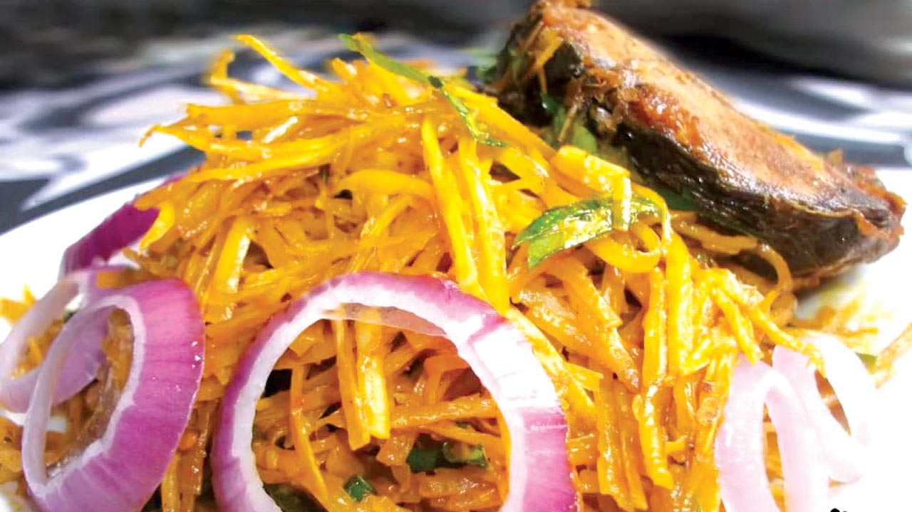

african salad (locally known as Abacha) is one of the meals that mostly preapared and enjoyed by the Ibo speaking people of nigeria. its native taste is so distintive, making it a delicacy to be enjoyed by all. It is usually served as a side dish in special event such as traditional weddings, burial ceremonies, anniversaries or the visit of a special guest. It is best served with palm wine, a local drink tapped from palm trees, but you can also enjoy with any chilled drink of choice.